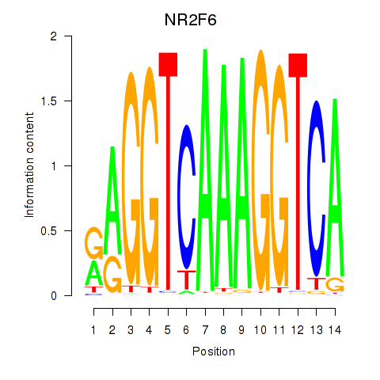
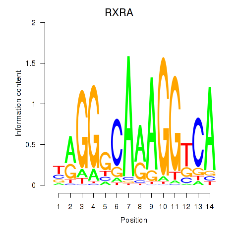
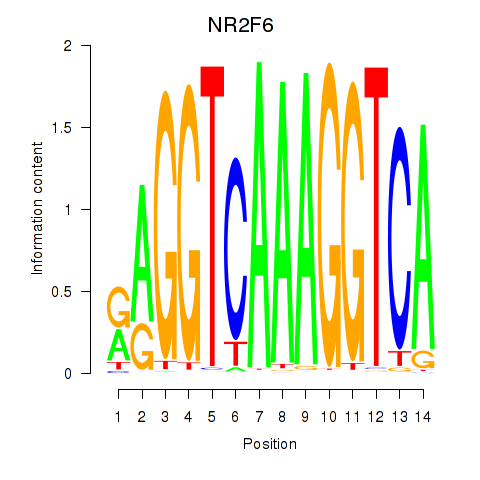
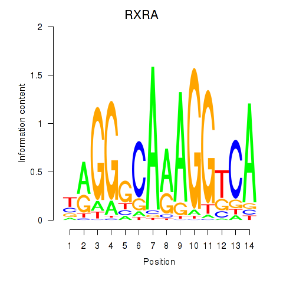

Motif ID: RXRA_NR2F6_NR2C2
Z-value: 0.563
 



Transcription factors associated with RXRA_NR2F6_NR2C2:
| Gene Symbol | Entrez ID | Gene Name |
|---|---|---|
| NR2C2 | ENSG00000177463.11 | NR2C2 |
| NR2F6 | ENSG00000160113.5 | NR2F6 |
| RXRA | ENSG00000186350.8 | RXRA |
![](http://string-db.org/api/image/network?network_flavor=evidence&limit=0&species=9606&caller_identity=MARA&identifiers=9606.ENSP00000278379%0D9606.ENSP00000275764%0D9606.ENSP00000360317%0D9606.ENSP00000266735%0D9606.ENSP00000261574%0D9606.ENSP00000342143%0D9606.ENSP00000206765%0D9606.ENSP00000377941%0D9606.ENSP00000261195%0D9606.ENSP00000426638%0D9606.ENSP00000250244%0D9606.ENSP00000300283%0D9606.ENSP00000427407%0D9606.ENSP00000241041%0D9606.ENSP00000254442%0D9606.ENSP00000290663%0D9606.ENSP00000366271%0D9606.ENSP00000225371%0D9606.ENSP00000322175%0D9606.ENSP00000365775%0D9606.ENSP00000388996%0D9606.ENSP00000381785%0D9606.ENSP00000327801%0D9606.ENSP00000351536%0D9606.ENSP00000349305%0D9606.ENSP00000309757%0D9606.ENSP00000321853%0D9606.ENSP00000242317%0D9606.ENSP00000302716%0D9606.ENSP00000265000%0D9606.ENSP00000369395%0D9606.ENSP00000252487%0D9606.ENSP00000373066%0D9606.ENSP00000253408%0D9606.ENSP00000315757%0D9606.ENSP00000264167%0D9606.ENSP00000341268%0D9606.ENSP00000321845%0D9606.ENSP00000438125%0D9606.ENSP00000379430%0D9606.ENSP00000347839%0D9606.ENSP00000455507%0D9606.ENSP00000388872%0D9606.ENSP00000365837%0D9606.ENSP00000253788%0D9606.ENSP00000366314%0D9606.ENSP00000000442%0D9606.ENSP00000437073%0D9606.ENSP00000363794%0D9606.ENSP00000312987%0D9606.ENSP00000441000%0D9606.ENSP00000262518%0D9606.ENSP00000317542%0D9606.ENSP00000222902%0D9606.ENSP00000309163%0D9606.ENSP00000336927%0D9606.ENSP00000287152%0D9606.ENSP00000361868%0D9606.ENSP00000336724%0D9606.ENSP00000422131%0D9606.ENSP00000304845%0D9606.ENSP00000331242%0D9606.ENSP00000374409%0D9606.ENSP00000378364%0D9606.ENSP00000312624%0D9606.ENSP00000309116%0D9606.ENSP00000314030%0D9606.ENSP00000347896%0D9606.ENSP00000303174%0D9606.ENSP00000341139%0D9606.ENSP00000315774%0D9606.ENSP00000217320%0D9606.ENSP00000307746%0D9606.ENSP00000319006%0D9606.ENSP00000359045%0D9606.ENSP00000368591%0D9606.ENSP00000324105%0D9606.ENSP00000392411%0D9606.ENSP00000384832%0D9606.ENSP00000406577%0D9606.ENSP00000370058%0D9606.ENSP00000362354%0D9606.ENSP00000369127%0D9606.ENSP00000333275%0D9606.ENSP00000362513%0D9606.ENSP00000295092%0D9606.ENSP00000261070%0D9606.ENSP00000338389%0D9606.ENSP00000359050%0D9606.ENSP00000382004%0D9606.ENSP00000316746%0D9606.ENSP00000344260%0D9606.ENSP00000460665%0D9606.ENSP00000343435%0D9606.ENSP00000283233%0D9606.ENSP00000039007%0D9606.ENSP00000356975%0D9606.ENSP00000352928%0D9606.ENSP00000302100%0D9606.ENSP00000225655%0D9606.ENSP00000352498)
{kind=link}
{kind=link}
{kind=link}
{kind=link}
Top targets:
Gene overrepresentation in biological_process category:
| Log-likelihood per target | Total log-likelihood | Term | Description |
|---|---|---|---|
| 0.2 | 0.5 | GO:0070902 | mitochondrial tRNA pseudouridine synthesis(GO:0070902) |
| 0.0 | 0.3 | GO:0015692 | lead ion transport(GO:0015692) |
| 0.0 | 0.2 | GO:0002215 | defense response to nematode(GO:0002215) |
| 0.0 | 0.1 | GO:0032581 | ER-dependent peroxisome organization(GO:0032581) |
| 0.0 | 0.3 | GO:0010757 | negative regulation of plasminogen activation(GO:0010757) |
| 0.0 | 0.1 | GO:0045041 | B cell cytokine production(GO:0002368) protein import into mitochondrial intermembrane space(GO:0045041) |
| 0.0 | 0.2 | GO:0036309 | protein localization to M-band(GO:0036309) |
| 0.0 | 0.2 | GO:0006438 | valyl-tRNA aminoacylation(GO:0006438) |
| 0.0 | 0.1 | GO:2001287 | negative regulation of caveolin-mediated endocytosis(GO:2001287) |
| 0.0 | 0.1 | GO:0042450 | arginine biosynthetic process via ornithine(GO:0042450) response to biotin(GO:0070781) |
| 0.0 | 0.1 | GO:1903028 | positive regulation of opsonization(GO:1903028) |
| 0.0 | 0.0 | GO:0009822 | alkaloid catabolic process(GO:0009822) |
| 0.0 | 0.1 | GO:0034371 | chylomicron remodeling(GO:0034371) |
| 0.0 | 0.1 | GO:0080120 | CAAX-box protein processing(GO:0071586) CAAX-box protein maturation(GO:0080120) |
| 0.0 | 0.1 | GO:0006478 | peptidyl-tyrosine sulfation(GO:0006478) |
| 0.0 | 0.5 | GO:0097034 | mitochondrial respiratory chain complex IV assembly(GO:0033617) mitochondrial respiratory chain complex IV biogenesis(GO:0097034) |
| 0.0 | 0.1 | GO:0070980 | biphenyl catabolic process(GO:0070980) |
| 0.0 | 0.1 | GO:1901994 | meiotic DNA integrity checkpoint(GO:0044778) negative regulation of meiotic cell cycle phase transition(GO:1901994) |
| 0.0 | 0.1 | GO:0002933 | lipid hydroxylation(GO:0002933) |
| 0.0 | 0.1 | GO:0021993 | initiation of neural tube closure(GO:0021993) |
| 0.0 | 0.2 | GO:2000158 | positive regulation of ubiquitin-specific protease activity(GO:2000158) |
| 0.0 | 0.1 | GO:0050787 | antibiotic metabolic process(GO:0016999) detoxification of mercury ion(GO:0050787) |
| 0.0 | 0.2 | GO:0046940 | nucleoside monophosphate phosphorylation(GO:0046940) |
| 0.0 | 0.1 | GO:0010903 | negative regulation of very-low-density lipoprotein particle remodeling(GO:0010903) |
| 0.0 | 0.1 | GO:0045229 | cell envelope organization(GO:0043163) external encapsulating structure organization(GO:0045229) |
| 0.0 | 0.1 | GO:0070446 | cellular response to caloric restriction(GO:0061433) negative regulation of oligodendrocyte progenitor proliferation(GO:0070446) |
| 0.0 | 0.1 | GO:0033274 | response to vitamin B2(GO:0033274) heterochromatin maintenance(GO:0070829) |
| 0.0 | 0.3 | GO:0048312 | intracellular distribution of mitochondria(GO:0048312) |
| 0.0 | 0.1 | GO:1901503 | ether lipid biosynthetic process(GO:0008611) glycerol ether biosynthetic process(GO:0046504) ether biosynthetic process(GO:1901503) |
| 0.0 | 0.1 | GO:1904808 | regulation of protein oxidation(GO:1904806) positive regulation of protein oxidation(GO:1904808) |
| 0.0 | 0.1 | GO:0030241 | skeletal muscle myosin thick filament assembly(GO:0030241) |
| 0.0 | 0.1 | GO:2000418 | positive regulation of eosinophil migration(GO:2000418) |
| 0.0 | 0.0 | GO:2000583 | renal albumin absorption(GO:0097018) regulation of renal albumin absorption(GO:2000532) regulation of platelet-derived growth factor receptor-alpha signaling pathway(GO:2000583) negative regulation of platelet-derived growth factor receptor-alpha signaling pathway(GO:2000584) |
| 0.0 | 0.2 | GO:0034378 | chylomicron assembly(GO:0034378) |
| 0.0 | 0.0 | GO:1902299 | pre-replicative complex assembly involved in nuclear cell cycle DNA replication(GO:0006267) pre-replicative complex assembly(GO:0036388) pre-replicative complex assembly involved in cell cycle DNA replication(GO:1902299) |
| 0.0 | 0.0 | GO:0045720 | negative regulation of integrin biosynthetic process(GO:0045720) |
| 0.0 | 0.2 | GO:0018094 | protein polyglycylation(GO:0018094) |
| 0.0 | 0.3 | GO:0030388 | fructose 1,6-bisphosphate metabolic process(GO:0030388) |
| 0.0 | 0.0 | GO:0098507 | polynucleotide 5' dephosphorylation(GO:0098507) |
| 0.0 | 0.1 | GO:0046035 | CMP salvage(GO:0006238) CMP biosynthetic process(GO:0009224) CMP metabolic process(GO:0046035) |
| 0.0 | 0.3 | GO:0010764 | negative regulation of fibroblast migration(GO:0010764) |
| 0.0 | 0.2 | GO:0007196 | adenylate cyclase-inhibiting G-protein coupled glutamate receptor signaling pathway(GO:0007196) |
| 0.0 | 0.1 | GO:0001554 | luteolysis(GO:0001554) |
| 0.0 | 0.0 | GO:0021849 | neuroblast division in subventricular zone(GO:0021849) |
| 0.0 | 0.0 | GO:0060730 | regulation of intestinal epithelial structure maintenance(GO:0060730) |
| 0.0 | 0.0 | GO:0044240 | multicellular organism lipid catabolic process(GO:0044240) |
| 0.0 | 0.1 | GO:0033314 | mitotic DNA replication checkpoint(GO:0033314) |
| 0.0 | 0.0 | GO:1904211 | membrane protein proteolysis involved in retrograde protein transport, ER to cytosol(GO:1904211) |
| 0.0 | 0.2 | GO:1900029 | positive regulation of ruffle assembly(GO:1900029) |
| 0.0 | 0.1 | GO:0045976 | negative regulation of mitotic cell cycle, embryonic(GO:0045976) midbrain morphogenesis(GO:1904693) |
| 0.0 | 0.1 | GO:0099590 | neurotransmitter receptor internalization(GO:0099590) |
| 0.0 | 0.0 | GO:1904106 | protein localization to microvillus(GO:1904106) |
| 0.0 | 0.1 | GO:0070779 | D-aspartate transport(GO:0070777) D-aspartate import(GO:0070779) |
| 0.0 | 0.0 | GO:0032918 | polyamine acetylation(GO:0032917) spermidine acetylation(GO:0032918) |
Gene overrepresentation in cellular_component category:
| Log-likelihood per target | Total log-likelihood | Term | Description |
|---|---|---|---|
| 0.0 | 0.3 | GO:0070826 | paraferritin complex(GO:0070826) |
| 0.0 | 0.2 | GO:0016222 | procollagen-proline 4-dioxygenase complex(GO:0016222) |
| 0.0 | 0.3 | GO:0071203 | WASH complex(GO:0071203) |
| 0.0 | 0.1 | GO:0044393 | microspike(GO:0044393) |
| 0.0 | 0.2 | GO:0034715 | pICln-Sm protein complex(GO:0034715) |
| 0.0 | 0.3 | GO:0005577 | fibrinogen complex(GO:0005577) |
| 0.0 | 0.0 | GO:0036387 | nuclear pre-replicative complex(GO:0005656) pre-replicative complex(GO:0036387) |
| 0.0 | 0.0 | GO:0071749 | IgA immunoglobulin complex(GO:0071745) IgA immunoglobulin complex, circulating(GO:0071746) monomeric IgA immunoglobulin complex(GO:0071748) polymeric IgA immunoglobulin complex(GO:0071749) secretory IgA immunoglobulin complex(GO:0071751) |
| 0.0 | 0.0 | GO:0034365 | discoidal high-density lipoprotein particle(GO:0034365) |
| 0.0 | 0.2 | GO:0036157 | outer dynein arm(GO:0036157) |
| 0.0 | 0.1 | GO:0046696 | lipopolysaccharide receptor complex(GO:0046696) |
| 0.0 | 0.1 | GO:0005850 | eukaryotic translation initiation factor 2 complex(GO:0005850) |
| 0.0 | 0.1 | GO:0000015 | phosphopyruvate hydratase complex(GO:0000015) |
| 0.0 | 0.1 | GO:0005742 | mitochondrial outer membrane translocase complex(GO:0005742) |
| 0.0 | 0.1 | GO:0032021 | NELF complex(GO:0032021) |
Gene overrepresentation in molecular_function category:
| Log-likelihood per target | Total log-likelihood | Term | Description |
|---|---|---|---|
| 0.2 | 0.5 | GO:0004730 | pseudouridylate synthase activity(GO:0004730) |
| 0.1 | 0.3 | GO:0047025 | 3-oxoacyl-[acyl-carrier-protein] reductase (NADH) activity(GO:0047025) |
| 0.1 | 0.2 | GO:0015361 | low-affinity sodium:dicarboxylate symporter activity(GO:0015361) |
| 0.1 | 0.3 | GO:0016531 | copper chaperone activity(GO:0016531) |
| 0.0 | 0.3 | GO:0015086 | cadmium ion transmembrane transporter activity(GO:0015086) cobalt ion transmembrane transporter activity(GO:0015087) lead ion transmembrane transporter activity(GO:0015094) ferrous iron uptake transmembrane transporter activity(GO:0015639) |
| 0.0 | 0.2 | GO:0016971 | flavin-linked sulfhydryl oxidase activity(GO:0016971) |
| 0.0 | 0.2 | GO:0030197 | extracellular matrix constituent, lubricant activity(GO:0030197) |
| 0.0 | 0.2 | GO:0001641 | group II metabotropic glutamate receptor activity(GO:0001641) |
| 0.0 | 0.2 | GO:0004832 | valine-tRNA ligase activity(GO:0004832) |
| 0.0 | 0.2 | GO:0046899 | nucleoside triphosphate adenylate kinase activity(GO:0046899) |
| 0.0 | 0.1 | GO:0034875 | oxidoreductase activity, acting on CH or CH2 groups, quinone or similar compound as acceptor(GO:0033695) caffeine oxidase activity(GO:0034875) |
| 0.0 | 0.2 | GO:0008195 | phosphatidate phosphatase activity(GO:0008195) |
| 0.0 | 0.1 | GO:0008476 | protein-tyrosine sulfotransferase activity(GO:0008476) |
| 0.0 | 0.3 | GO:0004332 | fructose-bisphosphate aldolase activity(GO:0004332) |
| 0.0 | 0.1 | GO:1990698 | palmitoleoyltransferase activity(GO:1990698) |
| 0.0 | 0.1 | GO:0050698 | proteoglycan sulfotransferase activity(GO:0050698) |
| 0.0 | 0.2 | GO:0035800 | deubiquitinase activator activity(GO:0035800) |
| 0.0 | 0.1 | GO:0070653 | high-density lipoprotein particle receptor binding(GO:0070653) |
| 0.0 | 0.1 | GO:0031728 | CCR3 chemokine receptor binding(GO:0031728) |
| 0.0 | 0.1 | GO:0051373 | FATZ binding(GO:0051373) |
| 0.0 | 0.1 | GO:0046970 | NAD-dependent histone deacetylase activity (H4-K16 specific)(GO:0046970) |
| 0.0 | 0.2 | GO:0004656 | procollagen-proline 4-dioxygenase activity(GO:0004656) procollagen-proline dioxygenase activity(GO:0019798) |
| 0.0 | 0.1 | GO:0004967 | glucagon receptor activity(GO:0004967) |
| 0.0 | 0.1 | GO:0004489 | methylenetetrahydrofolate reductase (NAD(P)H) activity(GO:0004489) |
| 0.0 | 0.1 | GO:0034186 | apolipoprotein A-I binding(GO:0034186) |
| 0.0 | 0.1 | GO:0016936 | galactoside binding(GO:0016936) |
| 0.0 | 0.2 | GO:0070735 | protein-glycine ligase activity(GO:0070735) |
| 0.0 | 0.1 | GO:0072345 | NAADP-sensitive calcium-release channel activity(GO:0072345) |
| 0.0 | 0.0 | GO:0004651 | polynucleotide 5'-phosphatase activity(GO:0004651) |
| 0.0 | 0.1 | GO:0070095 | fructose-6-phosphate binding(GO:0070095) |
| 0.0 | 0.1 | GO:0005124 | scavenger receptor binding(GO:0005124) |
| 0.0 | 0.2 | GO:0000774 | adenyl-nucleotide exchange factor activity(GO:0000774) |
| 0.0 | 0.0 | GO:1902271 | D3 vitamins binding(GO:1902271) |
| 0.0 | 0.1 | GO:0015501 | glutamate:sodium symporter activity(GO:0015501) |
| 0.0 | 0.0 | GO:0004807 | triose-phosphate isomerase activity(GO:0004807) |
| 0.0 | 0.1 | GO:0004634 | phosphopyruvate hydratase activity(GO:0004634) |
| 0.0 | 0.0 | GO:0004566 | beta-glucuronidase activity(GO:0004566) |
| 0.0 | 0.0 | GO:0008441 | 3'(2'),5'-bisphosphate nucleotidase activity(GO:0008441) |
| 0.0 | 0.0 | GO:0004421 | hydroxymethylglutaryl-CoA synthase activity(GO:0004421) |
| 0.0 | 0.1 | GO:0010997 | anaphase-promoting complex binding(GO:0010997) |
| 0.0 | 0.1 | GO:0017077 | oxidative phosphorylation uncoupler activity(GO:0017077) |
| 0.0 | 0.0 | GO:0004145 | diamine N-acetyltransferase activity(GO:0004145) |
Gene overrepresentation in C2:CP:REACTOME category:
| Log-likelihood per target | Total log-likelihood | Term | Description |
|---|---|---|---|
| 0.0 | 0.2 | REACTOME_BILE_SALT_AND_ORGANIC_ANION_SLC_TRANSPORTERS | Genes involved in Bile salt and organic anion SLC transporters |
| 0.0 | 0.2 | REACTOME_NEF_MEDIATED_DOWNREGULATION_OF_MHC_CLASS_I_COMPLEX_CELL_SURFACE_EXPRESSION | Genes involved in Nef mediated downregulation of MHC class I complex cell surface expression |
| 0.0 | 0.3 | REACTOME_CHYLOMICRON_MEDIATED_LIPID_TRANSPORT | Genes involved in Chylomicron-mediated lipid transport |
| 0.0 | 0.2 | REACTOME_XENOBIOTICS | Genes involved in Xenobiotics |
|
|
|
|